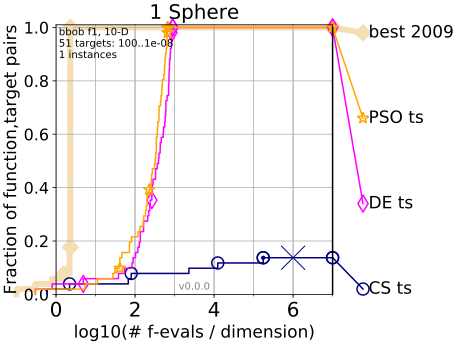
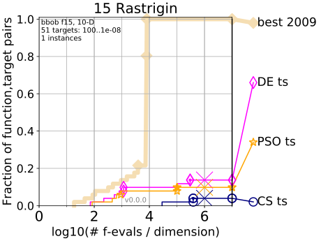
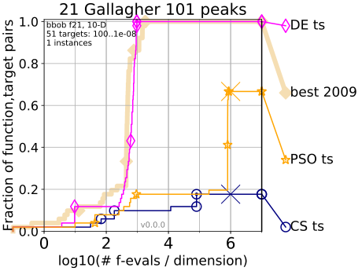
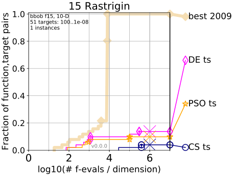
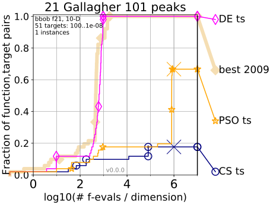

Last dimension | Dimension = 10 | First dimension
 
Bootstrapped empirical cumulative distribution of the number of objective function evaluations divided by dimension (FEvals/DIM) for 51 targets with target precision in $10^{[−8..2]}$ for all functions and subgroups in different dimensions. As reference algorithm, the best algorithm from BBOB 2009 is shown as light thick line with diamond markers.

Bootstrapped empirical cumulative distribution of the number of objective function evaluations divided by dimension (FEvals/DIM) for 51 targets with target precision in $10^{[−8..2]}$ for all functions and subgroups in different dimensions. As reference algorithm, the best algorithm from BBOB 2009 is shown as light thick line with diamond markers.